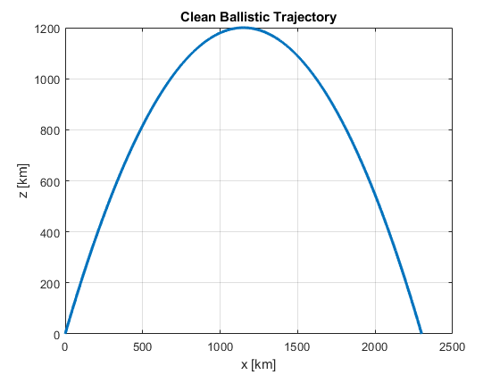
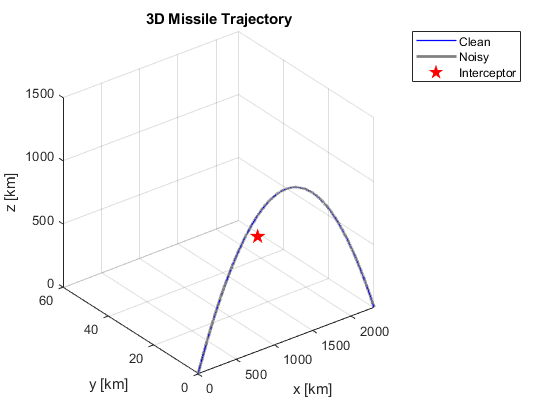
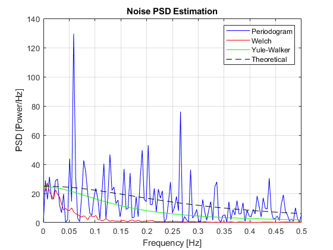
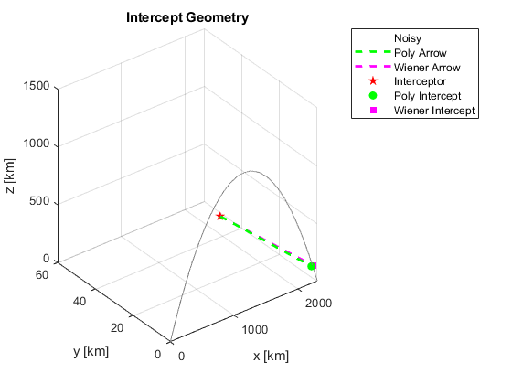
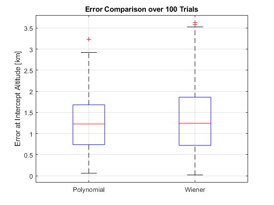
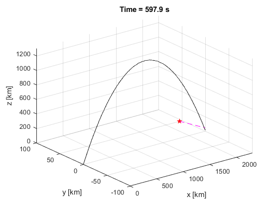

Contents
% DRSP course project % Ballistic Missile Interception Simulation and Prediction % Author: Jordan Jacob % ID: 316495522 % Date: 12/07/2025
Clear workspace and close all figures
clear;
close all;
clc;
Step I – Simulation of the ballistic missile trajectory
% A. Define parameters and simulate the clean trajectory xtarget = 2300; % Expected x-coordinate of impact (in km) yt = 0; % y-coordinate remains 0 (2D trajectory) zt = 0; % z = 0 at impact x0 = 0; % Launch point x (Iran) y0 = 0; % Launch point y z0 = 0; % Launch point z xa = 2250; % Arrow missile (interceptor) x position ya = 50; % Arrow y position za = 0; % Arrow z position h = 1200; % Maximum height of missile (vertex of parabola) Ttotal = 600; % Total simulation time in seconds N = 2048; % Number of time samples in the simulation b = xtarget / 2; % x-location of the peak height c = h; % z-location of the peak height a = -h / b^2; % Coefficient that defines curvature of parabola T = linspace(0, Ttotal, N); % Time vector x = linspace(0, xtarget, N); % Horizontal position vector zb = a * (x - b).^2 + c; % Parabolic formula for the ballistic arc % B. Simulate AR(1) noise and add it to clean trajectory sigmaW = 1; % Noise standard deviation whiteNoise = sigmaW * randn(1, N); % Generate white noise noise = filter(1, [1, -0.8], whiteNoise); % Pass white noise through AR(1) filter zbNoisy = zb + noise; % Add noise to clean trajectory to simulate measurement % C. Plot the clean and noisy trajectories in 2D and 3D figure; plot(x, zb, 'LineWidth', 2); xlabel('x [km]'); ylabel('z [km]'); title('Clean Ballistic Trajectory'); grid on; figure; plot3(x, zeros(size(x)), zb, 'b', 'LineWidth', 1); hold on; plot3(x, zeros(size(x)), zbNoisy, 'Color', [0.5 0.5 0.5],'LineWidth', 2); plot3(xa, ya, za, 'rp', 'MarkerFaceColor', 'r', 'MarkerSize', 10); xlabel('x [km]'); ylabel('y [km]'); zlabel('z [km]'); title('3D Missile Trajectory'); grid on; legend('Clean','Noisy','Interceptor'); 
Step II – Spectral analysis and modeling of the noise you have simulated
% A. Estimate the power spectral density of the noise using the periodogram periodogramPSD = zeros(1, N); for k = 1:N S = sum(noise .* exp(-1j*2*pi*(k-1)*(0:N-1)/N)); periodogramPSD(k) = (1/N) * abs(S)^2; end f = (0:N-1)/N; % Estimate PSD using the Welch method (Corrected Welch: 50% overlap + Hamming window) M = 256; D = M/2; w = hamming(M)'; U = sum(w.^2); K = floor((N - M) / D) + 1; PxWelch = zeros(1, M); for k = 0:K-1 idx = k*D + (1:M); segment = noise(idx) .* w; Pseg = abs(fft(segment)).^2; PxWelch = PxWelch + Pseg; end PxWelch = PxWelch / (K * U); fWelch = (0:M-1)/M; % Estimate PSD using the Yule-Walker method with xcorr for autocorrelation p = 1; [rxx, lags] = xcorr(noise, p, 'unbiased'); rxx = rxx(lags >= 0); RYw = toeplitz(rxx(1:p)); rVec = rxx(2:p+1); aYw = -RYw \ rVec; aCoeff = [1; aYw]; % Estimate innovation variance sigma^2 using the Yule-Walker equation sigmaYW = rxx(1) + aYw * rxx(2); % Evaluate PSD using direct formula, not freqz fYw = linspace(0, 0.5, 512); omegaYw = 2 * pi * fYw; PYw = sigmaYW ./ abs(1 + aYw * exp(-1j * omegaYw)).^2; omega = 2 * pi * f; Ptheory = sigmaW^2 ./ abs(1 - 0.8 * exp(-1j * omega)).^2; % B. Theoretical PSD, and the estimators PSD's on the same set of axes % Align all vectors to common plotting length minLen = min([length(fYw), floor(N/2)+1, floor(M/2)+1]); f1 = linspace(0, 0.5, minLen); PxPer1 = periodogramPSD(1:minLen); fWelch1 = fWelch(1:minLen); PxWelch1 = PxWelch(1:minLen); PYw1 = PYw(1:minLen); Ptheory1 = Ptheory(1:minLen); figure; plot(f1, PxPer1, 'b', fWelch1, PxWelch1, 'r', f1, PYw1, 'g', f1, Ptheory1, 'k--'); xlabel('Frequency [Hz]'); ylabel('PSD [Power/Hz]'); title('Noise PSD Estimation'); grid on; legend('Periodogram','Welch','Yule-Walker','Theoretical');
Step III – Trajectory prediction The missile
% a. Use a matched filter on the noisy signal to find the beginning of the descent phase segmentLength = round(N/4); matchedTemplate = zb(end - segmentLength + 1:end) - mean(zb(end - segmentLength + 1:end)); % subtract the mean to reduce DC bias - center the signal and to improve SNR matchedFilter = conv(zbNoisy - mean(zbNoisy), flip(matchedTemplate), 'same'); % flip the template for time-reversal % signal is real-valued, conjugation is redundant [~, descentIndex] = max(matchedFilter); tDescent = T(descentIndex); % b. Polynomial fit of the trajectory after descent segmentSamples = round(15 * N / Ttotal); fitIndices = descentIndex : min(descentIndex + segmentSamples - 1, N); xFit = x(fitIndices)'; zFit = zbNoisy(fitIndices)'; polyCoeffs = polyfit(xFit, zFit, 2); xPolyPred = x(fitIndices(end):end)'; zPolyPred = polyval(polyCoeffs, xPolyPred); % b. Wiener FIR prediction, alpha seconds ahead alpha = round(5 * N / Ttotal); pw = 20; L = pw + alpha; rWiener = zeros(L+1,1); for k = 0:L rWiener(k+1) = sum(zbNoisy(descentIndex:end-k) .* zbNoisy(descentIndex+k:end)) / (N - descentIndex + 1); end Rw = toeplitz(rWiener(1:pw)); rc = rWiener(alpha+1 : alpha+pw); hWiener = Rw \ rc; zWienerPred = nan(1, N); for n = descentIndex + pw : N - alpha % Predicts alpha steps ahead using past pw samples of the noisy signal % The delay alpha affects how far into the future we attempt to predict, creating a lag in real-time application zWienerPred(n + alpha) = hWiener' * zbNoisy(n-1:-1:n-pw)'; end % c. Calculate intercept location and time at 150 km altitude interceptAlt = 150; idxPolyIntercept = find(zPolyPred <= interceptAlt, 1); validWien = (descentIndex + alpha):N; idxWienIntercept = validWien(find(zWienerPred(validWien) <= interceptAlt, 1)); xInterceptPoly = xPolyPred(idxPolyIntercept); zInterceptPoly = zPolyPred(idxPolyIntercept); xInterceptWien = x(idxWienIntercept); zInterceptWien = zWienerPred(idxWienIntercept); % d. Calculate required missile launch time arrowSpeed = 2.5; % Arrow missile speed in km/s tInterceptPoly = T(fitIndices(end) + idxPolyIntercept - 1); tInterceptWien = T(idxWienIntercept); polyDistance = hypot(xInterceptPoly - xa, zInterceptPoly - za); wienDistance = hypot(xInterceptWien - xa, zInterceptWien - za); launchTimePoly = tInterceptPoly - polyDistance / arrowSpeed; launchTimeWien = tInterceptWien - wienDistance / arrowSpeed; % Print results for c and d sections % These values indicate when the descent starts, the estimated intercept points and times, % and when the interceptor must be launched to successfully meet the missile. % These are critical for evaluating system performance and responsiveness. disp('Step III Results:'); fprintf('Descent detected at t = %.2f s\n', tDescent); fprintf('Polynomial intercept: x=%.1f z=%.1f km, t=%.2f s, launch=%.2f s\n', xInterceptPoly, zInterceptPoly, tInterceptPoly, launchTimePoly); fprintf('Wiener intercept: x=%.1f z=%.1f km, t=%.2f s, launch=%.2f s\n', xInterceptWien, zInterceptWien, tInterceptWien, launchTimeWien); % e. Add to 3D plot the arrow interception paths figure; plot3(x, zeros(size(x)), zbNoisy, 'Color', [0.5 0.5 0.5]); hold on; plot3([xa, xInterceptPoly], [ya, 0], [za, zInterceptPoly], 'g--', 'LineWidth', 2); plot3([xa, xInterceptWien], [ya, 0], [za, zInterceptWien], 'm--', 'LineWidth', 2); plot3(xa, ya, za, 'rp', 'MarkerFaceColor', 'r'); plot3(xInterceptPoly, 0, zInterceptPoly, 'go', 'MarkerFaceColor', 'g'); plot3(xInterceptWien, 0, zInterceptWien, 'ms', 'MarkerFaceColor', 'm'); xlabel('x [km]'); ylabel('y [km]'); zlabel('z [km]'); title('Intercept Geometry'); grid on; legend('Noisy','Poly Arrow','Wiener Arrow','Interceptor','Poly Intercept','Wiener Intercept');
Step III Results: Descent detected at t = 524.96 s Polynomial intercept: x=2209.0 z=148.2 km, t=576.26 s, launch=514.74 s Wiener intercept: x=2237.1 z=147.5 km, t=583.59 s, launch=524.37 s
Step IV – Comparison and Evaluation
Display numerical comparison between methods
% Evaluate Accuracy over 1 Trials fprintf('\nStep IV – Comparison:\n'); fprintf('Polynomial method error at intercept (z): %.2f km\n', abs(zInterceptPoly - interceptAlt)); fprintf('Wiener method error at intercept (z): %.2f km\n', abs(zInterceptWien - interceptAlt)); % Evaluate Accuracy over 100 Trials nTrials = 100; errorsPoly = nan(1, nTrials); errorsWien = nan(1, nTrials); for trial = 1:nTrials % Generate new noise + noisy trajectory wn = sigmaW * randn(1, N); noiseTrial = filter(1, [1, -0.8], wn); zbTrial = zb + noiseTrial; % Matched filter for descent detection matchedTemplate = zb(end - segmentLength + 1:end) - mean(zb(end - segmentLength + 1:end)); matchedFilter = conv(zbTrial - mean(zbTrial), flip(matchedTemplate), 'same'); [~, descentIdx] = max(matchedFilter); % Polynomial method fitIdx = descentIdx : min(descentIdx + segmentSamples - 1, N); xFit = x(fitIdx)'; zFit = zbTrial(fitIdx)'; coeffs = polyfit(xFit, zFit, 2); xPolyPred = x(fitIdx(end):end)'; zPolyPred = polyval(coeffs, xPolyPred); idxPoly = find(zPolyPred <= interceptAlt, 1); if ~isempty(idxPoly) errPoly = abs(zPolyPred(idxPoly) - interceptAlt); else errPoly = NaN; % No intercept found end % Wiener method rWien = zeros(L+1,1); for k = 0:L rWien(k+1) = sum(zbTrial(descentIdx:end-k) .* zbTrial(descentIdx+k:end)) / (N - descentIdx + 1); end Rw = toeplitz(rWien(1:pw)); rc = rWien(alpha+1 : alpha+pw); hWien = Rw \ rc; zWienPred = nan(1, N); for n = descentIdx + pw : N - alpha zWienPred(n + alpha) = hWien' * zbTrial(n-1:-1:n-pw)'; end validWien = (descentIdx + alpha):N; idxWien = validWien(find(zWienPred(validWien) <= interceptAlt, 1)); if ~isempty(idxWien) errWien = abs(zWienPred(idxWien) - interceptAlt); else errWien = NaN; end % Store errors errorsPoly(trial) = errPoly; errorsWien(trial) = errWien; end % Compute stats ignoring NaNs meanPoly = mean(errorsPoly, 'omitnan'); meanWien = mean(errorsWien, 'omitnan'); varPoly = var(errorsPoly, 'omitnan'); varWien = var(errorsWien, 'omitnan'); fprintf('\nStep VI – Accuracy Evaluation:\n'); fprintf('Polynomial: Mean Error = %.2f km, Variance = %.2f\n', meanPoly, varPoly); fprintf('Wiener: Mean Error = %.2f km, Variance = %.2f\n', meanWien, varWien); % Plot figure; boxplot([errorsPoly', errorsWien'], 'Labels', {'Polynomial', 'Wiener'}); ylabel('Error at Intercept Altitude [km]'); title('Error Comparison over 100 Trials'); grid on; % differences in accuracy, delay, reliability fprintf('Discussion:\n'); fprintf('- Polynomial fit is more stable but depends heavily on the chosen fitting segment.\n'); fprintf('- Wiener prediction is better for forecasting but more sensitive to noise and estimation errors.\n'); fprintf('- In real-time, Wiener filter may be more adaptable but riskier unless tuned well.\n');
Step IV – Comparison: Polynomial method error at intercept (z): 1.77 km Wiener method error at intercept (z): 2.52 km Step VI – Accuracy Evaluation: Polynomial: Mean Error = 1.26 km, Variance = 0.49 Wiener: Mean Error = 1.33 km, Variance = 0.70 Discussion: - Polynomial fit is more stable but depends heavily on the chosen fitting segment. - Wiener prediction is better for forecasting but more sensitive to noise and estimation errors. - In real-time, Wiener filter may be more adaptable but riskier unless tuned well.
Step V – Simulation Animation
% Animate the missile and interceptor paths over time % We animate every 20 time steps to balance visual clarity and computational efficiency % This shows missile motion and interceptor attempt visually over the full flight duration figure; for i = 1:20:N clf; plot3(x(1:i), zeros(1,i), zbNoisy(1:i), 'k'); hold on; if i >= descentIndex + pw + alpha && ~isnan(zWienerPred(i)) plot3(xa, ya, za, 'rp', 'MarkerFaceColor', 'r'); plot3([xa, x(i)], [ya, 0], [za, zWienerPred(i)], 'm--'); end xlim([0 xtarget]); ylim([-100 100]); zlim([0 1300]); xlabel('x [km]'); ylabel('y [km]'); zlabel('z [km]'); title(sprintf('Time = %.1f s', T(i))); grid on; drawnow; end